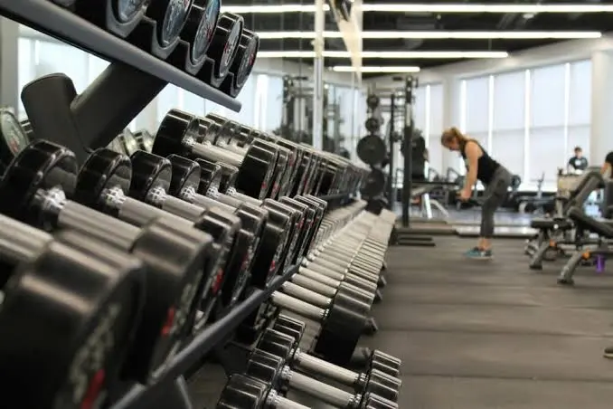
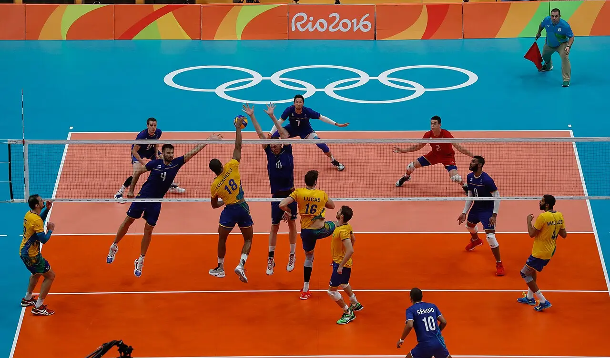
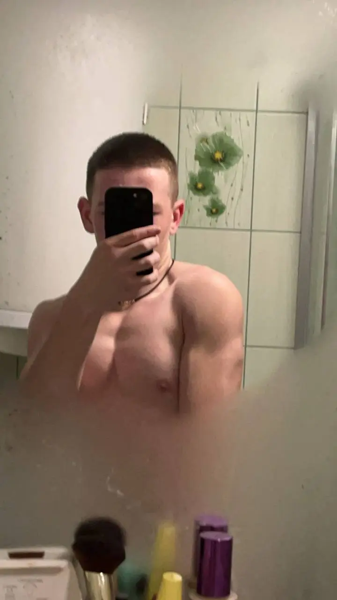

Хоча я навчаюся на комп'ютерних науках, моєю великою пристрастю є спорт. Я вже 4 роки активно тренуюся в залі, цікавлюся різними видами спорту і в майбутньому планую стати професійним фітнес-тренером, поєднуючи технології та фізичний розвиток.

Силові тренування
4 роки регулярних занять у тренажерному залі. Працюю з вільними вагами, детально відстежую свої показники у жимі лежачи та присіданнях, а також на практиці вивчаю механіку гіпертрофії м'язів.

Командні види спорту
Люблю різноманітну активність, зокрема волейбол. Добре розбираюся в офіційних правилах FIVB, тактиці переміщення гравців на лініях та загальній механіці гри.

Майбутня професія: Тренер
Моя мета — допомагати іншим досягати форми. У майбутньому планую писати власні програми тренувань і, можливо, розробити софт на C для структурування спортивних метрик.